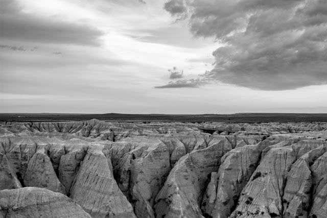

Nobel Khandaker
Latest
Photography
Long-running projects
- Baytullah (His house)
- Portraits of a Bangladeshi village
- Metropolis (Dhaka, Bangladesh)
- Life of a tree
Landscapes and travel
- Land of death
- The Middle East
- Niagra Falls - Canada
- South Dakota, USA
- Bangladesh
- The Maldives
- Antelope Canyon, Utah, USA
- Midwest, USA
- Yellowstone National Park, Montana, USA
- Arizona, USA
- Pacific Northwest, USA
- Salton Sea, California, USA
- Death Valley, California, USA
- Joshua tree national park, California, USA
- Istanbul, Turkey
- Cancun, Mexico
 Thunderstorm in the Badlands (South Dakota, USA). Stone art by an unknown artist. Mosque in the Maldives Island, Maldives.
Manuscripts
- Passage of time [Draft]
Software engineering
Affiliations
Author bio
Dr. Khandaker Amitabh Nobel is the son of Khandaker Mozammel Haque and Mitali Hossain. He was born in Chuadanga, Bangladesh. He has completed his middle and high school education from the Jhenidah Cadet College. Dr. Nobel has received his BS degree with Honors in physics from the University of Dhaka, Bangladesh. He then earned the MS and the PhD degree in computer science from the University of Nebraska - Lincoln, USA. He is a recipient of the Othmer Fellowship from the University of Nebraska - Lincoln, USA. His primary research interests include AI, multiagent systems, and the human learning theory. He has published several research papers in international peer-reviewed conferences and journals. His prototype collaborative learning software has earned the top emerging application award from the AAAI organization (USA) in 2010. After graduating from the University of Nebraska, he worked as a lead software engineer at Microsoft in the USA, before joining Shohoz as the Vice President of technology in Bangladesh. He is now the Chief Technology Officer of LiquidX studio.
My resume [Link]
Questions and comments: nobel at outlook dot com